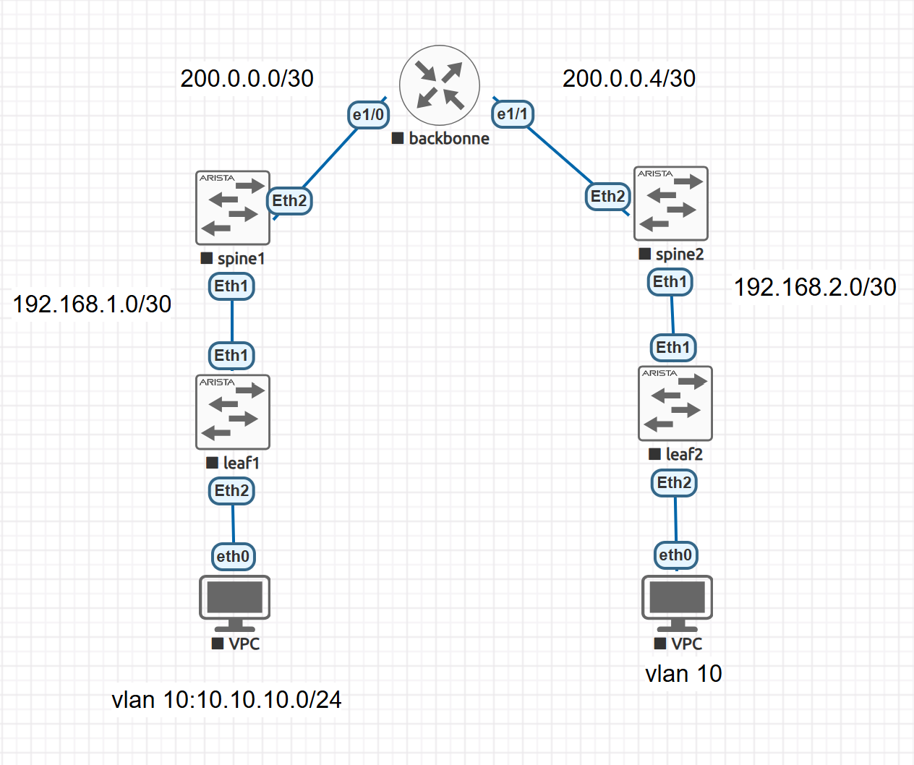
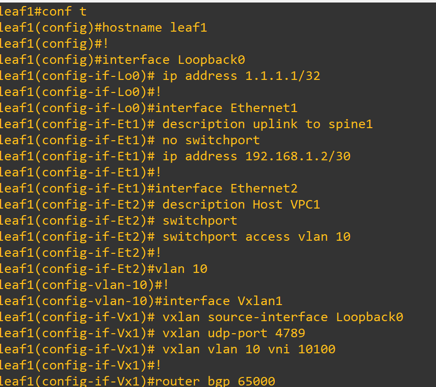
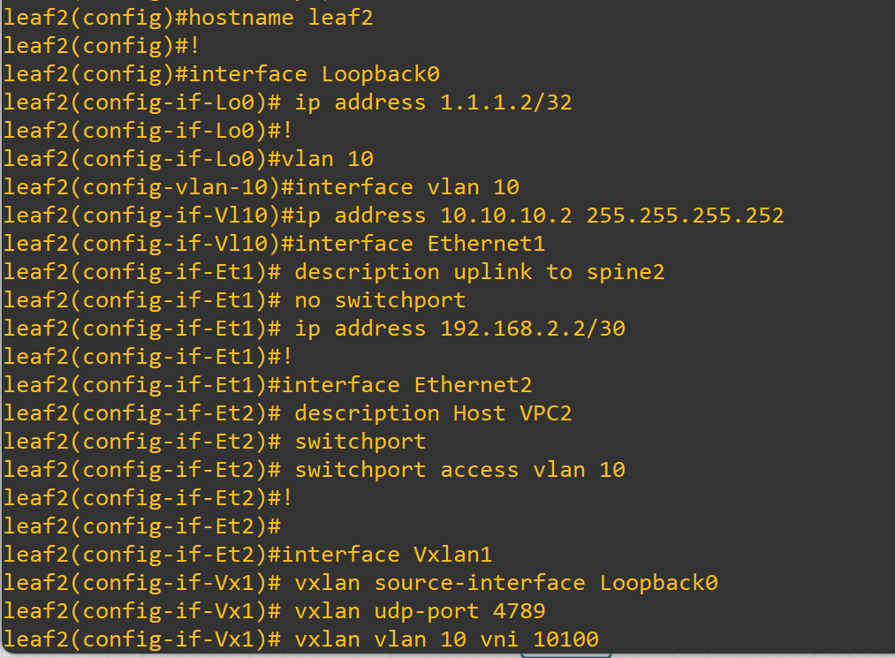
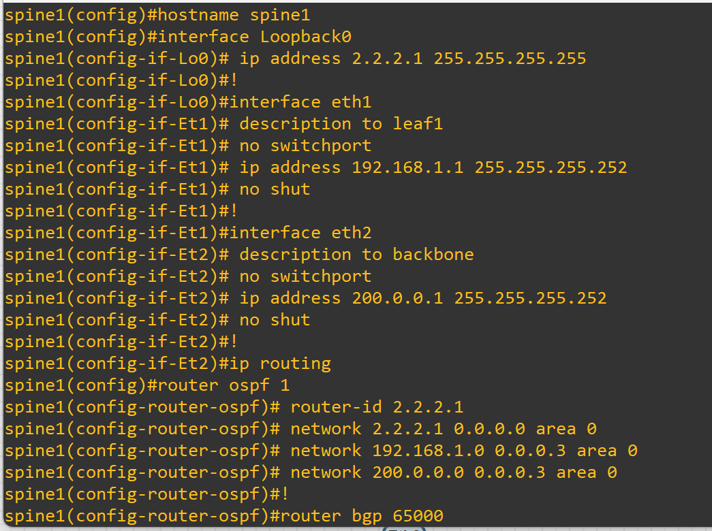
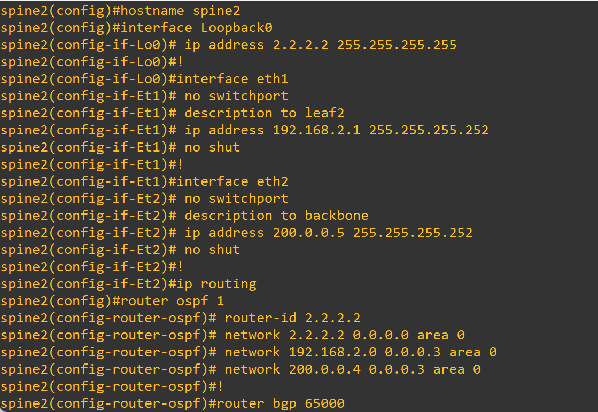
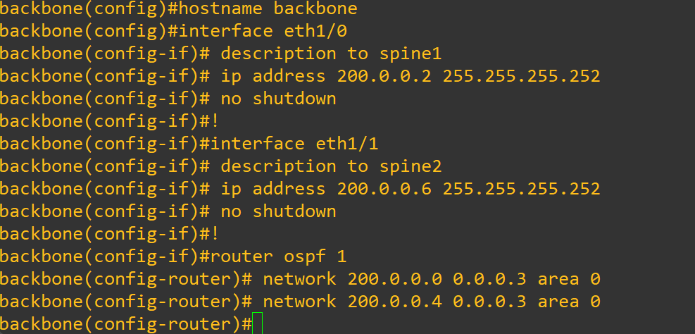

Le but est de mettre en œuvre une interconnexion entre deux data centers (DC1 et DC2) à l’aide de VXLAN EVPN, permettant l’extension du VLAN 10 sur une infrastructure L3.
Cette section décrit l’architecture physique et logique du projet.
Le projet repose sur une architecture réseau à double plan : un réseau underlay utilisant OSPF pour la connectivité IP entre les équipements, et un réseau overlay basé sur VXLAN EVPN pour le transport de la couche 2 sur IP entre les datacenters. Les équipements impliqués incluent des switches Arista (Leaf et Spine) et un routeur Cisco pour la connectivité backbone.
| Type | Élément | Interface | Adresse / ID | Description |
|---|---|---|---|---|
| Underlay | Leaf1 | Ethernet1 | 192.168.1.2/30 | Lien vers Spine1 |
| Underlay | Leaf2 | Ethernet1 | 192.168.2.2/30 | Lien vers Spine2 |
| Underlay | Spine1 | Loopback0 | 2.2.2.1/32 | ID BGP / OSPF |
| Underlay | Spine2 | Loopback0 | 2.2.2.2/32 | ID BGP / OSPF |
| Overlay | Leaf1 | Loopback0 | 1.1.1.1/32 | VTEP Source |
| Overlay | Leaf2 | Loopback0 | 1.1.1.2/32 | VTEP Source |
| Overlay | VXLAN | VNI 10100 | VLAN 10 | Transport L2 étendu |
| Overlay | Host VPC1/VPC2 | VLAN 10 | 10.10.10.1 / 10.10.10.2 | IP Hôtes |
Chaque Leaf dispose d’une interface Loopback0 utilisée comme source VXLAN (VTEP). Les VLANs sont encapsulés en VXLAN avec des VNIs correspondants.
OSPF assure le routage IP de base. BGP EVPN transporte les informations de MAC/IP/VNI entre les Leaf via les Spine (RR).
Les Leaf encapsulent le trafic L2 dans des paquets VXLAN, acheminés sur le réseau IP jusqu’à d’autres VTEP (Leaf distants).
hostname leaf1
!
interface Loopback0
ip address 1.1.1.1/32
!
interface Ethernet1
description uplink to spine1
no switchport
ip address 192.168.1.2/30
!
interface Ethernet2
description Host VPC1
switchport
switchport access vlan 10
!
vlan 10
!
interface Vxlan1
vxlan source-interface Loopback0
vxlan udp-port 4789
vxlan vlan 10 vni 10100
!
router bgp 65000
router-id 1.1.1.1
no bgp default ipv4-unicast
neighbor 2.2.2.1 remote-as 65000
neighbor 2.2.2.1 update-source Loopback0
neighbor 2.2.2.2 remote-as 65000
neighbor 2.2.2.2 update-source Loopback0
!
address-family evpn
neighbor 2.2.2.1 activate
neighbor 2.2.2.2 activate
!
router ospf 1
router-id 1.1.1.1
network 1.1.1.1/32 area 0
network 192.168.1.2/30 area 0

hostname leaf2
!
interface Loopback0
ip address 1.1.1.2/32
!
vlan 10
interface vlan 10
ip address 10.10.10.2 255.255.255.252
interface Ethernet1
description uplink to spine2
no switchport
ip address 192.168.2.2/30
!
interface Ethernet2
description Host VPC2
switchport
switchport access vlan 10
!
interface Vxlan1
vxlan source-interface Loopback0
vxlan udp-port 4789
vxlan vlan 10 vni 10100
vxlan flood vtep 1.1.1.1
!
router bgp 65000
router-id 1.1.1.2
bgp default ipv4-unicast
neighbor 2.2.2.1 remote-as 65000
neighbor 2.2.2.1 update-source Loopback0
neighbor 2.2.2.2 remote-as 65000
neighbor 2.2.2.2 update-source Loopback0
!
address-family evpn
neighbor 2.2.2.1 activate
neighbor 2.2.2.2 activate
!
ip routing
!
router ospf 1
router-id 1.1.1.2
network 1.1.1.2/32 area 0
network 192.168.2.2/30 area 0

hostname spine1
interface Loopback0
ip address 2.2.2.1 255.255.255.255
!
interface eth1
description to leaf1
no switchport
ip address 192.168.1.1 255.255.255.252
no shut
!
interface eth2
description to backbone
no switchport
ip address 200.0.0.1 255.255.255.252
no shut
!
ip routing
router ospf 1
router-id 2.2.2.1
network 2.2.2.1 0.0.0.0 area 0
network 192.168.1.0 0.0.0.3 area 0
network 200.0.0.0 0.0.0.3 area 0
!
router bgp 65000
neighbor 1.1.1.2 remote-as 65000
neighbor 1.1.1.2 update-source Loopback0
!
address-family evpn
neighbor 1.1.1.2 activate
neighbor 1.1.1.2 route-reflector-client

hostname spine2
interface Loopback0
ip address 2.2.2.2 255.255.255.255
!
interface eth1
no switchport
description to leaf2
ip address 192.168.2.1 255.255.255.252
no shut
!
interface eth2
no switchport
description to backbone
ip address 200.0.0.5 255.255.255.252
no shut
!
ip routing
router ospf 1
router-id 2.2.2.2
network 2.2.2.2 0.0.0.0 area 0
network 192.168.2.0 0.0.0.3 area 0
network 200.0.0.4 0.0.0.3 area 0
!
router bgp 65000
neighbor 1.1.1.2 remote-as 65000
neighbor 1.1.1.2 update-source Loopback0
!
address-family evpn
neighbor 1.1.1.2 activate
neighbor 1.1.1.2 route-reflector-client

hostname backbone
interface eth1/0
description to spine1
ip address 200.0.0.2 255.255.255.252
no shutdown
!
interface eth1/1
description to spine2
ip address 200.0.0.6 255.255.255.252
no shutdown
!
router ospf 1
network 200.0.0.0 0.0.0.3 area 0
network 200.0.0.4 0.0.0.3 area 0

Voici les vérifications après le déploiement :
show vxlan ou show interface vxlan1La mise en place de l’interconnexion VXLAN EVPN entre les deux data centers a permis d’étendre la connectivité de niveau 2 sur une infrastructure de niveau 3, tout en conservant une haute disponibilité et une flexibilité opérationnelle. Grâce à l’utilisation d’OSPF pour le plan underlay et de BGP EVPN pour le plan overlay, l’architecture garantit une séparation claire des responsabilités et une scalabilité optimale. Les tests de validation réalisés (connectivité des hôtes, mapping VNI/MAC/IP, encapsulation/décapsulation VXLAN) confirment le bon fonctionnement de l’architecture. Cette solution pose ainsi les bases solides d’une infrastructure moderne, adaptée aux environnements multicloud, aux migrations de VM et à la virtualisation des services réseau. Ce projet démontre la pertinence des technologies VXLAN EVPN dans les contextes de data centers distribués, et ouvre la voie à une intégration future avec des solutions SDN ou des contrôleurs centralisés pour une automatisation avancée.